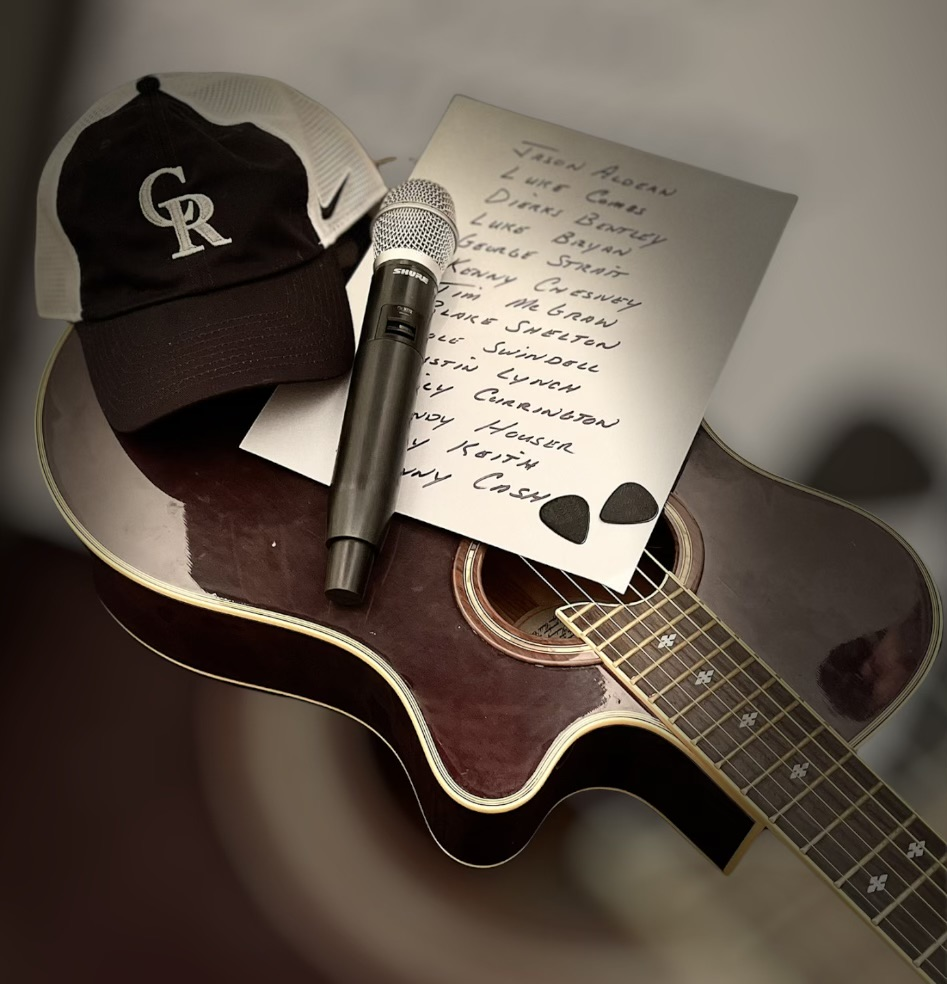

Sygnal to Noise
Location: Biddeford • Maine
Genre: Melodic Hard Rock
Highlights: Award-winning band • Shared stage with national acts
Influences:Queen, KISS, Stone Temple Pilots, David Bowie, Prince, Alice In Chains, and Foo Fighters.
View Band
Black Rabbit Holes
Location: Windham, ME
Genre: Rock / Hard Rock / Metal / Prog / Emo / Alternative
Looking For: Whoever wants to write / record music
Influences: 6 Gig, Coheed and Cambria, Dream Theater, Failure, Fallout Boy, Hum, King's X, Paramore, Rush, Tool
View Band

Sparrow
Location: Portland, ME
Genre: Folk
Looking For: Venues
Influences: Gillian Welch, Avett Brothers, Jesse Welles, Sufjan Stevens, Punch Brothers
View Band
Project Firebird
Location: Portland, ME
Genre: Classic Rock & More
Looking For: New Booking Opportunities
Influences:AC/DC, CCR, Tom Petty, Joan Jett, etc.
View Band

Country Roads
Location: Southern Maine
Genre: New Country
Looking For:Opportunities to perform and add to our following.
Influences:Luke Combs, Tim McGraw, Dierks Bentley, Jason Aldean, Etc.
View Band
Makin' It Country
Location: Central Maine
Genre: Country
Looking For:Venues, park concerts, campgrounds, fairs
Influences:George Strait, Ray Price, The Mavericks, Lorrie Morgan, John Prine, Vince Gill, etc.
View BandBootleg
Location: Blue Hill Area • Maine
Genre: Classic Rock / 80's Rock / Country
Looking For: Lead Guitar, Drums
Influences:Aerosmith, Bad Company, Motley Crue, Guns n' Roses
View Band
Ascent To Power
Location: Lewiston • Maine
Genre: Metal
Looking For: Not specified
Influences: Not specified
View Band
MISBEHAVIN
Location: Lewiston • Maine
Genre: Classic Rock, Country, Blues
Looking For: Venues
Influences: 70’s to 90’s Classic Rock & Country
View Band
Church of Good Times Trio
Location: Portland • Maine
Genre: Instrumental Jazz/Jam
Looking For: Performance Venues (Clubs, House Parties, Festivals etc..)
Influences: Miles Davis, John Coltrane, Medesky Martin & Wood, John Scofield, Grateful Dead, Jimi Hendrix, King Tubby, Bill Frisell
View Band
Matt Roller
Location: Waterboro • Maine
Genre: Punk
Looking For: Anybody
Influences: Alkaline Trio, Bad Religion, Blink-182, Descendants, Lagwagon, NOFX, PUP
View Band

Parsonsfield Music Project
Location: Southern Maine
Genre: Classic Rock, Rock Blues, 90s Country
Members: 4 Piece (Drums, Bass, Keyboard, Guitar)
Looking For: New venues
View Profile